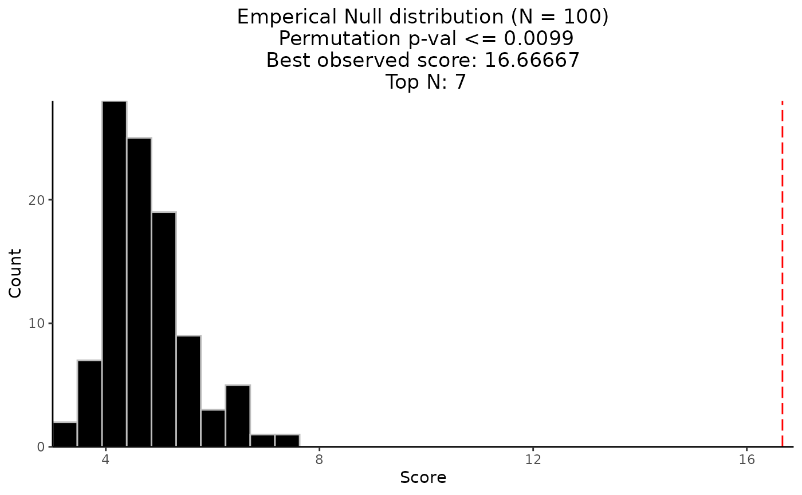

Permutation-Based Testing
Source:vignettes/permutation_based_testing.Rmd
permutation_based_testing.RmdBy default, CaDrA performs both forward and backward
search algorithm to look for a subset of features whose union is
maximally associated with an outcome of interest, based on (currently)
one of four scoring functions (Kolmogorov-Smirnov,
Conditional Mutual Information,
Wilcoxon, and custom-defined). To test
whether the strength of the association between the set of features and
the observed input scores (e.g., pathway activity, drug sensitivity,
etc.) is greater than it would be expected by chance,
CaDrA supports permutation-based significance testing.
Importantly, the permutation test iterates over the entire search
procedure (e.g., if top_N = 7, each permutation iteration
will consist of running the search over the top 7 features).
Load required datasets
- A
binary features matrixalso known asFeature Set(such as somatic mutations, copy number alterations, chromosomal translocations, etc.) The 1/0 row vectors indicate the presence/absence of ‘omics’ features in the samples. TheFeature Setcan be a matrix or an object of class SummarizedExperiment from SummarizedExperiment package) - A vector of continuous scores (or
Input Scores) representing a functional response of interest (such as protein expression, pathway activity, etc.)
Find a subset of features that maximally associated with a given outcome of interest
Here we are using Kolmogorow-Smirnow (KS) scoring method to search for best features
candidate_search_res <- CaDrA::candidate_search(
FS = sim_FS,
input_score = sim_Scores,
method = "ks_pval", # Use Kolmogorow-Smirnow scoring function
method_alternative = "less", # Use one-sided hypothesis testing
weights = NULL, # If weights is provided, perform a weighted-KS test
search_method = "both", # Apply both forward and backward search
top_N = 7, # Number of top features to kick start the search
max_size = 10, # Allow at most 10 features in meta-feature matrix
best_score_only = FALSE # Return all results from the search
)Visualize best meta-features result
# Extract the best meta-feature result
topn_best_meta <- CaDrA::topn_best(topn_list = candidate_search_res)
# Visualize meta-feature result
CaDrA::meta_plot(topn_best_list = topn_best_meta)
Perform permutation-based testing
# Set seed for permutation-based testing
set.seed(123)
perm_res <- CaDrA::CaDrA(
FS = sim_FS,
input_score = sim_Scores,
method = "ks_pval", # Use Kolmogorow-Smirnow scoring function
method_alternative = "less", # Use one-sided hypothesis testing
weights = NULL, # If weights is provided, perform a weighted-KS test
search_method = "both", # Apply both forward and backward search
top_N = 7, # Repeat the search with the top N features
max_size = 10, # Allow at most 10 features in the meta-feature matrix
n_perm = 100, # Number of permutations to perform
perm_alternative = "one.sided", # One-sided permutation-based p-value alternative type
plot = FALSE, # We will plot later
ncores = 2 # Number of cores to perform parallelization
)Visualize permutation result
# Visualize permutation results
permutation_plot(perm_res = perm_res)
SessionInfo
sessionInfo()
R version 4.3.2 (2023-10-31)
Platform: x86_64-pc-linux-gnu (64-bit)
Running under: Ubuntu 22.04.3 LTS
Matrix products: default
BLAS: /usr/lib/x86_64-linux-gnu/openblas-pthread/libblas.so.3
LAPACK: /usr/lib/x86_64-linux-gnu/openblas-pthread/libopenblasp-r0.3.20.so; LAPACK version 3.10.0
locale:
[1] LC_CTYPE=C.UTF-8 LC_NUMERIC=C LC_TIME=C.UTF-8
[4] LC_COLLATE=C.UTF-8 LC_MONETARY=C.UTF-8 LC_MESSAGES=C.UTF-8
[7] LC_PAPER=C.UTF-8 LC_NAME=C LC_ADDRESS=C
[10] LC_TELEPHONE=C LC_MEASUREMENT=C.UTF-8 LC_IDENTIFICATION=C
time zone: UTC
tzcode source: system (glibc)
attached base packages:
[1] stats graphics grDevices utils datasets methods base
other attached packages:
[1] CaDrA_1.0.1 testthat_3.2.0 devtools_2.4.5 usethis_2.2.2
[5] BiocStyle_2.28.1
loaded via a namespace (and not attached):
[1] bitops_1.0-7 tcltk_4.3.2
[3] remotes_2.4.2.1 rlang_1.1.1
[5] magrittr_2.0.3 matrixStats_1.0.0
[7] compiler_4.3.2 systemfonts_1.0.5
[9] callr_3.7.3 vctrs_0.6.4
[11] reshape2_1.4.4 stringr_1.5.0
[13] profvis_0.3.8 pkgconfig_2.0.3
[15] crayon_1.5.2 fastmap_1.1.1
[17] XVector_0.40.0 ellipsis_0.3.2
[19] labeling_0.4.3 caTools_1.18.2
[21] utf8_1.2.4 promises_1.2.1
[23] rmarkdown_2.25 sessioninfo_1.2.2
[25] ps_1.7.5 ragg_1.2.6
[27] purrr_1.0.2 xfun_0.41
[29] zlibbioc_1.46.0 cachem_1.0.8
[31] GenomeInfoDb_1.36.4 jsonlite_1.8.7
[33] highr_0.10 later_1.3.1
[35] DelayedArray_0.26.7 parallel_4.3.2
[37] prettyunits_1.2.0 R6_2.5.1
[39] bslib_0.5.1 stringi_1.7.12
[41] pkgload_1.3.3 brio_1.1.3
[43] GenomicRanges_1.52.1 jquerylib_0.1.4
[45] Rcpp_1.0.11 bookdown_0.36
[47] SummarizedExperiment_1.30.2 iterators_1.0.14
[49] knitr_1.45 R.utils_2.12.2
[51] IRanges_2.34.1 Matrix_1.6-1.1
[53] httpuv_1.6.12 R.cache_0.16.0
[55] abind_1.4-5 rstudioapi_0.15.0
[57] yaml_2.3.7 doParallel_1.0.17
[59] gplots_3.1.3 codetools_0.2-19
[61] miniUI_0.1.1.1 misc3d_0.9-1
[63] processx_3.8.2 pkgbuild_1.4.2
[65] lattice_0.21-9 tibble_3.2.1
[67] plyr_1.8.9 Biobase_2.60.0
[69] shiny_1.7.5.1 withr_2.5.2
[71] evaluate_0.23 desc_1.4.2
[73] urlchecker_1.0.1 pillar_1.9.0
[75] BiocManager_1.30.22 MatrixGenerics_1.12.3
[77] KernSmooth_2.23-22 foreach_1.5.2
[79] stats4_4.3.2 rprojroot_2.0.3
[81] RCurl_1.98-1.13 S4Vectors_0.38.2
[83] ggplot2_3.4.4 munsell_0.5.0
[85] scales_1.2.1 gtools_3.9.4
[87] xtable_1.8-4 glue_1.6.2
[89] ppcor_1.1 tools_4.3.2
[91] fs_1.6.3 grid_4.3.2
[93] colorspace_2.1-0 GenomeInfoDbData_1.2.10
[95] cli_3.6.1 textshaping_0.3.7
[97] fansi_1.0.5 S4Arrays_1.0.6
[99] gtable_0.3.4 R.methodsS3_1.8.2
[101] sass_0.4.7 digest_0.6.33
[103] BiocGenerics_0.46.0 farver_2.1.1
[105] htmlwidgets_1.6.2 memoise_2.0.1
[107] htmltools_0.5.6.1 pkgdown_2.0.7
[109] R.oo_1.25.0 lifecycle_1.0.3
[111] mime_0.12 MASS_7.3-60